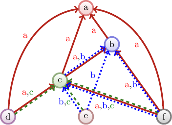
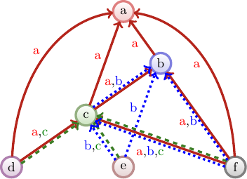

- Home
- Publications
- Research
- Software
- C.V.
- ner.uyoud@sogol
-
This site was generated using StaticWebPages.jl

HERE IS THE TEMPLATE PAGE. Jean-François Baffier is an academic researcher at the RIKEN Center for Advanced Intelligence Project (AIP), and a consultant in Artificial Intelligence, Big Data Science, Data Structures, and Algorithms. As an academic, he gives back to society through fundamental research in computer science supplemented by open source libraries and softwares.
Jean-François graduated Master course at University Paris-Sud and got his Ph.D. from the University of Tokyo. He was a member of the ERATO Kawarabayashi Large Project in Tokyo and Sendai, and a JSPS-CNRS research fellow hosted at the Tokyo Institute of Technology (Japan). He also was a JFLI member from October 2011 to August 2018.
His current research project involves the study of the “Analysis of information networks,” the “Smart compression for high-scalability of data structures,” and “Explainable Artificial Intelligence.” Other topic of interest covers modeling of failures and routing in Networks, Game Analysis, and AI for Games.
This is a dummy email: ner.uyoud@sogol
Consultant
Data Science and Optimization
Postdoctoral Researcher
RIKEN Center for Advanced Intelligence (AIP)
International Research Fellow
Japan Society for the Promotion of Science (hosted at the Tokyo Institute of Technology)
Postdoctoral Researcher
National Institute of Informatics (JST-ERATO Kawarabayashi Large Graph Project)
Teaching Assistant
The University of Tokyo
Mathematics Teacher
Junior High-School (French Ministry of Education)
Ph.D. of Information Science
The University of Tokyo
Master of Science (Informatics)
Paris-Sud University
Visiting Master Student
Paris-Diderot University
Bachelor of Informatics-Mathematics
Paris-Sud University
Higher School Preparatory Classes (Sciences)
École nationale de chimie physique et biologie de Paris (ENCPB)
Baccalauréat of Science
Lycée Louis-le-Grand
 
